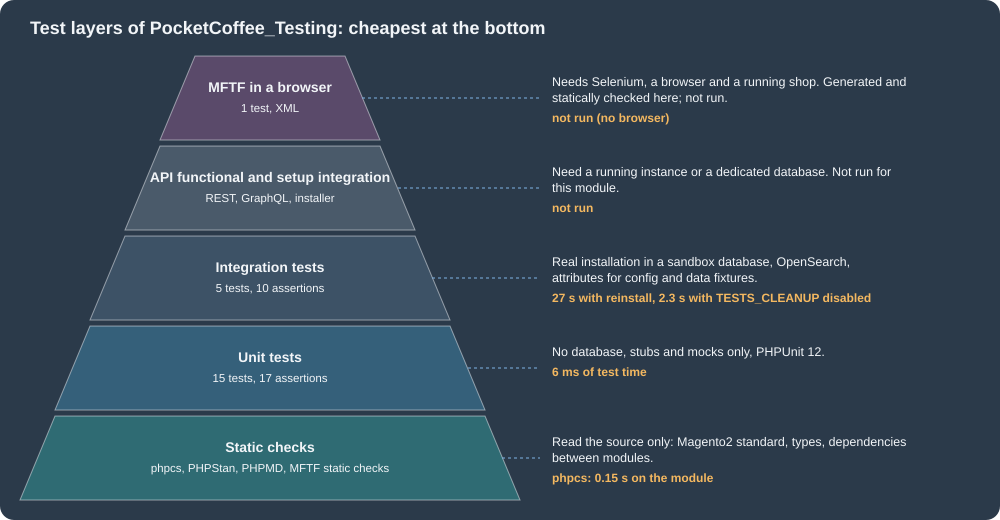

Testing, Coding Standards and Marketplace
|
This content was generated with the assistance of AI and should be verified against the official documentation before being relied on in production. |
This page was written against Magento Open Source 2.4.9 and Mage-OS 3.6.0 (based on 2.4.9, released 2026-10-14), with PHP 8.5.12, PHPUnit 12.5.42, PHP_CodeSniffer 3.13.6 with the Magento coding standard 3.6.0, PHPStan 1.12.34, PHPMD 3.0.0 and the Magento Functional Testing Framework (MFTF) 3.6.0, and it was checked on 2026-10-27. The test tools are the same in Magento Open Source and Adobe Commerce; where the Marketplace review applies only to listings on the Adobe Commerce Marketplace, the text says so. The page follows the pages on security and on module anatomy, whose module layout it assumes, and precedes upgrades, where the same checks are used to find the code that an upgrade breaks. For the general PHP tooling (PHPUnit and Pest, static analysis, PSR coding standards) see the pages on testing with PHPUnit and Pest, static analysis and refactoring and PSR standards and coding style.
The running example is Pocket Coffee. The module PocketCoffee_Testing holds the shop’s shipping rules (flat 4.90 EUR in Spain, free from
40 EUR, flat 9.90 EUR in the rest of the European Union, 5 kg per parcel) and the Coffee Club rule (10 percent off beans for members). The rules are plain classes with
one dependency, the scope configuration, so most of them can be tested without Magento, and a smaller part needs a real installation. The page runs
every tool against that module and shows what it printed. Everything marked as run was run on the local Mage-OS 3.6.0 store or on a throw-away
copy of it; the parts that could not be run are listed in What was run and what was not.
The kinds of tests
Magento organises its test code by type. Each type has its own directory under dev/tests/ and its own PHPUnit (or Codeception) configuration, and a module
keeps its own tests of the first, second and last kinds next to its code under Test/.
| Type | What it checks | Where it lives | Needs |
|---|---|---|---|
Unit |
One class in isolation, with its dependencies replaced by stubs and mocks. |
|
PHP and Composer dependencies only, no database. |
Integration |
Several classes working together on a real, installed Commerce instance: configuration, the database, indexers, the object manager. |
|
A dedicated test database and search engine; the framework installs a sandbox instance. |
Static |
Coding standard, complexity, dependencies between modules, legacy code, backward compatibility. |
|
The source code. |
API functional |
REST, SOAP and GraphQL endpoints from the point of view of a client. |
|
A running instance. |
Setup integration |
The installer and the schema ( |
|
A dedicated database. |
JavaScript |
Frontend modules with Jasmine. |
|
Node.js. |
Functional (MFTF) |
The storefront and the Admin in a real browser, described in XML. |
|
A running instance, Selenium or another WebDriver and a browser. |
Performance, load, upgrade |
CPU, memory and page load trends; behaviour under load; upgrades from earlier releases. |
The performance toolkit ( |
Dedicated environments. |
The picture orders the layers of the example module by cost, with the times that were measured on the local store. The rule of thumb that it encodes is to push every check as low as it can go: a rate calculation is a unit test, a configuration default is an integration test, and only a user journey belongs in a browser.

The technical guidelines of the platform add rules for tests, for example that only public methods should be tested (private and protected behaviour is tested through the public methods), that all objects should be tested in isolation and that the ObjectManager must not be used in unit tests. The next sections follow the order of the table from the cheapest to the most expensive type.
The module under test
The rules live in two classes. Both read their parameters from the scope configuration (etc/config.xml gives the defaults, and the Admin or bin/magento config:set can
change them), which makes them realistic: the unit tests have to stub the configuration, and the integration tests can use the real one.
<?xml version="1.0"?>
<config xmlns:xsi="http://www.w3.org/2001/XMLSchema-instance"
xsi:noNamespaceSchemaLocation="urn:magento:module:Magento_Store:etc/config.xsd">
<default>
<pocketcoffee_testing>
<shipping>
<spain_rate>4.90</spain_rate>
<eu_rate>9.90</eu_rate>
<free_threshold>40.00</free_threshold>
<max_weight_kg>5</max_weight_kg>
</shipping>
<club>
<discount_percent>10</discount_percent>
</club>
</pocketcoffee_testing>
</default>
</config><?php
declare(strict_types=1);
namespace PocketCoffee\Testing\Model;
use Magento\Framework\App\Config\ScopeConfigInterface;
/**
* Pocket Coffee shipping rules: flat 4.90 EUR in Spain (free from the threshold),
* flat 9.90 EUR in the rest of the European Union, 5 kg per parcel.
*/
class ShippingPolicy
{
private const PATH = 'pocketcoffee_testing/shipping/';
private const EU_COUNTRIES = [
'AT', 'BE', 'BG', 'HR', 'CY', 'CZ', 'DK', 'EE', 'FI', 'FR', 'DE', 'GR', 'HU', 'IE',
'IT', 'LV', 'LT', 'LU', 'MT', 'NL', 'PL', 'PT', 'RO', 'SK', 'SI', 'SE',
];
/**
* @param ScopeConfigInterface $scopeConfig
*/
public function __construct(private readonly ScopeConfigInterface $scopeConfig)
{
}
/**
* Shipping cost for a parcel, or null when Pocket Coffee does not ship it.
*
* @param string $countryId ISO 3166-1 alpha-2 code
* @param float $subtotal Order subtotal in EUR
* @param float $weightKg Parcel weight
* @return float|null
*/
public function getRate(string $countryId, float $subtotal, float $weightKg): ?float
{
if ($weightKg <= 0.0 || $weightKg > $this->getFloat('max_weight_kg')) {
return null;
}
$country = strtoupper($countryId);
if ($country === 'ES') {
return $subtotal >= $this->getFloat('free_threshold') ? 0.0 : $this->getFloat('spain_rate');
}
return in_array($country, self::EU_COUNTRIES, true) ? $this->getFloat('eu_rate') : null;
}
/**
* Read a shipping setting as float.
*
* @param string $field
* @return float
*/
private function getFloat(string $field): float
{
return (float)$this->scopeConfig->getValue(self::PATH . $field);
}
}<?php
declare(strict_types=1);
namespace PocketCoffee\Testing\Model;
use Magento\Framework\App\Config\ScopeConfigInterface;
/**
* Coffee Club: 10% off beans for members.
*/
class ClubPricing
{
public const XML_PATH_DISCOUNT = 'pocketcoffee_testing/club/discount_percent';
/**
* @param ScopeConfigInterface $scopeConfig
*/
public function __construct(private readonly ScopeConfigInterface $scopeConfig)
{
}
/**
* Price of beans for a customer, rounded to cents.
*
* @param float $price List price in EUR
* @param bool $isMember Whether the customer belongs to the Coffee Club group
* @return float
*/
public function getBeansPrice(float $price, bool $isMember): float
{
if (!$isMember) {
return round($price, 2);
}
$percent = (float)$this->scopeConfig->getValue(self::XML_PATH_DISCOUNT);
return round($price * (100.0 - $percent) / 100.0, 2);
}
}The module is registration.php, etc/module.xml and a composer.json that declares real version ranges for the Magento packages (the Marketplace rejects * for
magento/* packages, see Package requirements):
{
"name": "pocketcoffee/module-testing",
"description": "Pocket Coffee shipping and Coffee Club rules, with unit, integration and MFTF tests",
"type": "magento2-module",
"version": "1.0.0",
"license": "OSL-3.0",
"require": {
"php": "~8.3.0||~8.4.0||~8.5.0",
"magento/framework": "^103.0",
"magento/module-catalog": "^104.0",
"magento/module-search": "^101.1"
},
"autoload": {
"files": ["registration.php"],
"psr-4": {
"PocketCoffee\\Testing\\": ""
}
}
}The package names are the Adobe ones. Mage-OS packages carry their own names (mage-os/framework, mage-os/module-catalog) and declare that they replace the Adobe ones
at the version that matches the Magento release (magento/framework 103.0.9, magento/module-catalog 104.0.9 and magento/module-search 101.1.9 for 2.4.9), so the
ranges above resolve on both distributions.
Unit tests
A unit test class extends PHPUnit\Framework\TestCase, builds the object under test with new and replaces the dependencies. PHPUnit 12 (Magento 2.4.8 uses PHPUnit 10,
2.4.9 uses 12) distinguishes stubs, which only return values, from mocks, which also verify calls. The first test class uses a data provider for the shipping zones and a
stub of ScopeConfigInterface whose getValue() answers from an array, so a case can override one setting:
<?php
declare(strict_types=1);
namespace PocketCoffee\Testing\Test\Unit\Model;
use Magento\Framework\App\Config\ScopeConfigInterface;
use PHPUnit\Framework\Attributes\DataProvider;
use PHPUnit\Framework\TestCase;
use PocketCoffee\Testing\Model\ShippingPolicy;
class ShippingPolicyTest extends TestCase
{
/**
* Rates for the Pocket Coffee zones: [country, subtotal, weight, expected rate].
*
* @return array<string, array{string, float, float, float|null}>
*/
public static function rates(): array
{
return [
'Spain below the threshold' => ['ES', 28.80, 1.0, 4.90],
'Spain at the threshold' => ['ES', 40.00, 1.0, 0.0],
'Spain above the threshold' => ['ES', 58.70, 2.0, 0.0],
'lower case country code' => ['es', 10.00, 0.25, 4.90],
'Germany' => ['DE', 100.00, 1.0, 9.90],
'France below any threshold' => ['FR', 8.90, 0.25, 9.90],
'United States is not shipped' => ['US', 29.90, 1.0, null],
'parcel over the weight limit' => ['ES', 100.00, 5.01, null],
'parcel at the weight limit' => ['ES', 100.00, 5.0, 0.0],
'empty parcel' => ['ES', 10.00, 0.0, null],
];
}
#[DataProvider('rates')]
public function testGetRate(string $country, float $subtotal, float $weight, ?float $expected): void
{
$policy = new ShippingPolicy($this->configStub());
self::assertSame($expected, $policy->getRate($country, $subtotal, $weight));
}
public function testThresholdComesFromConfiguration(): void
{
$policy = new ShippingPolicy($this->configStub(['free_threshold' => '25']));
self::assertSame(0.0, $policy->getRate('ES', 25.00, 1.0));
self::assertSame(4.90, $policy->getRate('ES', 24.99, 1.0));
}
/**
* Stub of the scope config with the default values of etc/config.xml.
*
* @param array<string, string> $overrides
* @return ScopeConfigInterface
*/
private function configStub(array $overrides = []): ScopeConfigInterface
{
$values = array_merge([
'spain_rate' => '4.90',
'eu_rate' => '9.90',
'free_threshold' => '40.00',
'max_weight_kg' => '5',
], $overrides);
$config = $this->createStub(ScopeConfigInterface::class);
$config->method('getValue')->willReturnCallback(
static fn (string $path) => $values[substr($path, strlen('pocketcoffee_testing/shipping/'))] ?? null
);
return $config;
}
}<?php
declare(strict_types=1);
namespace PocketCoffee\Testing\Test\Unit\Model;
use Magento\Framework\App\Config\ScopeConfigInterface;
use PHPUnit\Framework\TestCase;
use PocketCoffee\Testing\Model\ClubPricing;
class ClubPricingTest extends TestCase
{
public function testMemberGetsTenPercentOff(): void
{
$pricing = $this->createPricing('10');
self::assertSame(8.01, $pricing->getBeansPrice(8.90, true));
self::assertSame(26.91, $pricing->getBeansPrice(29.90, true));
}
public function testGuestPaysListPrice(): void
{
self::assertSame(8.9, $this->createPricing('10')->getBeansPrice(8.90, false));
}
public function testPercentageIsReadFromConfiguration(): void
{
self::assertSame(7.12, $this->createPricing('20')->getBeansPrice(8.90, true));
}
public function testConfigIsReadOnlyWhenNeeded(): void
{
$config = $this->createMock(ScopeConfigInterface::class);
$config->expects(self::never())->method('getValue');
(new ClubPricing($config))->getBeansPrice(8.90, false);
}
private function createPricing(string $percent): ClubPricing
{
$config = $this->createStub(ScopeConfigInterface::class);
$config->method('getValue')->willReturnCallback(
static fn (string $path) => $path === ClubPricing::XML_PATH_DISCOUNT ? $percent : null
);
return new ClubPricing($config);
}
}Two details come from running the tests. First, an earlier version of createPricing() called ->with(ClubPricing::XML_PATH_DISCOUNT) on a stub. PHPUnit 12.5 accepts it
but reports the deprecation "Using with*() on a test stub has no effect and is deprecated" (it adds that with PHPUnit 13 it will not be possible to use with() on a test stub), once for each of the
three tests that used it; the final version answers from a callback, and a real expectation is written on a mock, as testConfigIsReadOnlyWhenNeeded does.
Second, the data provider is public static and is referenced with the DataProvider attribute, which is the form PHPUnit 12 requires.
Running them
The configuration file is the one of the framework, and the tests are selected with a path:
cd /var/www/html/dev/tests/unit
../../../vendor/bin/phpunit -c phpunit.xml.dist --testdox ../../../app/code/PocketCoffee/Testing/Test/UnitRun from dev/tests/unit with relative paths, as the documentation recommends for PHPUnit 10 and later; run from the project root with -c dev/tests/unit/phpunit.xml.dist the same
tests passed but PHPUnit printed a warning that the Allure extension could not bootstrap ("Config file allure/allure.config.php doesn’t exist"), because its configuration path is
relative to the working directory. The result on the local store:
PHPUnit 12.5.42 by Sebastian Bergmann and contributors. Runtime: PHP 8.5.12 Configuration: /var/www/html/dev/tests/unit/phpunit.xml.dist ............... 15 / 15 (100%) Club Pricing (PocketCoffee\Testing\Test\Unit\Model\ClubPricing) ✔ Member gets ten percent off ✔ Guest pays list price ✔ Percentage is read from configuration ✔ Config is read only when needed Shipping Policy (PocketCoffee\Testing\Test\Unit\Model\ShippingPolicy) ✔ Get rate with Spain below the threshold ... (the other nine data sets) ✔ Threshold comes from configuration OK (15 tests, 17 assertions)
To see that the tests protect the rule, the comparison in ShippingPolicy::getRate() was changed from >= to > in the running copy. Two tests failed at once and named the
case, which is what a data provider with descriptive keys buys:
1) ...ShippingPolicyTest::testGetRate@Spain at the threshold with data ('ES', 40.0, 1.0, 0.0)
Failed asserting that 4.9 is identical to 0.0.
2) ...ShippingPolicyTest::testThresholdComesFromConfiguration
Failed asserting that 4.9 is identical to 0.0.
FAILURES!
Tests: 15, Assertions: 16, Failures: 2.
bin/magento dev:tests:run unit runs the whole unit suite of the installation (the types are all, unit, integration, integration-all, static, static-all, integrity,
legacy and default, and -c passes extra arguments to PHPUnit). For scale, the unit tests of one core module, Magento_Csp, ran in 0.07 seconds on the same machine
(132 tests, 484 assertions). Unit tests that need the "magic" of the framework use Magento\Framework\TestFramework\Unit\Helper\ObjectManager to build the object under test with
mocked dependencies, but the guidelines say that the real ObjectManager must not be used. If PHPUnit runs out of memory, copy phpunit.xml.dist to phpunit.xml and add
<ini name="memory_limit" value="-1"/> (the framework’s own file already does). Code coverage needs an extension (Xdebug or PCOV) that the local PHP image does not have, so no
coverage figure is quoted here.
Integration tests
An integration test runs against an installed Commerce instance, so it can exercise the code that cannot be isolated: config.xml defaults, the repositories, the indexers, the
database. The price is time and setup. The framework installs a sandbox instance (dev/tests/integration/tmp/sandbox-<hash>) into a dedicated database and runs each test in a database
transaction that is rolled back.
Preparing the environment
The documentation lists three prerequisites: a dedicated database (never the database of the shop, because the framework drops and recreates its tables), the framework’s
installation configuration, and a PHPUnit configuration that matches the purpose of the run. The configuration file is a PHP array of setup:install options:
<?php
return [
'db-host' => 'db.example.test',
'db-user' => 'integration_tests',
'db-password' => '<test-db-password>',
'db-name' => 'magento_integration_tests',
'db-prefix' => '',
'backend-frontname' => 'backend',
'search-engine' => 'opensearch',
'opensearch-host' => 'search.example.test',
'opensearch-port' => 9200,
'opensearch-index-prefix' => 'integration',
'admin-user' => \Magento\TestFramework\Bootstrap::ADMIN_NAME,
'admin-password' => \Magento\TestFramework\Bootstrap::ADMIN_PASSWORD,
'admin-email' => \Magento\TestFramework\Bootstrap::ADMIN_EMAIL,
'admin-firstname' => \Magento\TestFramework\Bootstrap::ADMIN_FIRSTNAME,
'admin-lastname' => \Magento\TestFramework\Bootstrap::ADMIN_LASTNAME,
'consumers-wait-for-messages' => '0',
];The steps that were needed on the local machine are worth listing because each one produced an error that the documentation does not mention:
-
The tests ran in a separate container created from the same image and a copy of the project (code,
vendorandapp/etc/config.php;app/etc/env.phpwas removed so that the shop’s database can never be reached by accident), with a databasemg345_integration_testsand a dedicated user that only had access to it. -
dev/tests/integration/phpunit.xml,etc/config-global.phpandetc/post-install-setup-command-config.phpwere copied from their.distfiles, andetc/install-config-mysql.phpwas written as above, with a search index prefix of its own so that the shared OpenSearch instance was not touched. -
The first run stopped with "mkdir(): Permission denied" in
deployTestModules.php: the copy was owned by root and PHP ran as the web user.chown -Ron the project fixed it. -
The second run installed Magento in the test database and then stopped on
mysqldump --version: the framework stores a dump of the freshly installed database and needs themysqldumpbinary on the path (it checks the client version, because MySQL 8 clients need different options). The PHP image has no database client, so the MariaDB client package was installed in the test container. -
The
mysqldumpof MariaDB 11.8 insists on TLS unless told otherwise; an[client] skip-ssloption in a configuration file of the test container removed the error. -
The enabled modules of the installation are installed into the sandbox too. The copy of
config.phphad every other writer’sPocketCoffee_*module switched off and onlyPocketCoffee_Testingon, so that unrelated modules could not break the install.
The tests
The first test class checks that the defaults of etc/config.xml reach the policy through the real scope configuration and then uses the Config attribute to change two values for
one test. The attribute is repeatable, is reverted automatically, and is the replacement for the old @magentoConfigFixture annotation:
<?php
declare(strict_types=1);
namespace PocketCoffee\Testing\Test\Integration\Model;
use Magento\TestFramework\Fixture\Config;
use Magento\TestFramework\Fixture\DbIsolation;
use Magento\TestFramework\Helper\Bootstrap;
use PHPUnit\Framework\TestCase;
use PocketCoffee\Testing\Model\ShippingPolicy;
/**
* Runs the policy against the real configuration of an installed Commerce instance.
*/
class ShippingPolicyConfigTest extends TestCase
{
/**
* @var ShippingPolicy
*/
private ShippingPolicy $policy;
protected function setUp(): void
{
$this->policy = Bootstrap::getObjectManager()->create(ShippingPolicy::class);
}
/**
* The defaults of etc/config.xml reach the policy through the real ScopeConfig.
*/
public function testDefaultsAreLoadedFromConfigXml(): void
{
self::assertSame(4.90, $this->policy->getRate('ES', 28.80, 1.0));
self::assertSame(0.0, $this->policy->getRate('ES', 40.00, 1.0));
self::assertSame(9.90, $this->policy->getRate('DE', 28.80, 1.0));
}
#[
DbIsolation(true),
Config('pocketcoffee_testing/shipping/free_threshold', '25'),
Config('pocketcoffee_testing/shipping/spain_rate', '3.50')
]
public function testConfigFixtureOverridesTheDefaultsForOneTest(): void
{
self::assertSame(0.0, $this->policy->getRate('ES', 25.00, 1.0));
self::assertSame(3.50, $this->policy->getRate('ES', 24.99, 1.0));
}
public function testConfigFixtureIsRevertedAfterwards(): void
{
self::assertSame(4.90, $this->policy->getRate('ES', 24.99, 1.0));
}
}The second class uses a data fixture to create a real catalog product (the Product fixture of Magento_Catalog), with an alias to retrieve what the fixture returned, and
checks that the product is gone in the next test:
<?php
declare(strict_types=1);
namespace PocketCoffee\Testing\Test\Integration\Model;
use Magento\Catalog\Api\ProductRepositoryInterface;
use Magento\Catalog\Test\Fixture\Product as ProductFixture;
use Magento\TestFramework\Fixture\DataFixture;
use Magento\TestFramework\Fixture\DataFixtureStorageManager;
use Magento\TestFramework\Fixture\DbIsolation;
use Magento\TestFramework\Helper\Bootstrap;
use PHPUnit\Framework\TestCase;
use PocketCoffee\Testing\Model\ClubPricing;
/**
* Creates a real catalog product and prices it for a Coffee Club member.
*/
class BeansPriceTest extends TestCase
{
#[
DbIsolation(true),
DataFixture(
ProductFixture::class,
['sku' => 'PC-ETH-WHL-250', 'name' => 'Single-origin beans, Ethiopia, whole bean, 250 g', 'price' => 9.90],
as: 'beans'
)
]
public function testMemberPriceOfAFixtureProduct(): void
{
$fixture = DataFixtureStorageManager::getStorage()->get('beans');
$objectManager = Bootstrap::getObjectManager();
/** @var ProductRepositoryInterface $repository */
$repository = $objectManager->get(ProductRepositoryInterface::class);
$product = $repository->get('PC-ETH-WHL-250');
self::assertSame((int)$fixture->getId(), (int)$product->getId());
self::assertSame(9.90, (float)$product->getPrice());
/** @var ClubPricing $pricing */
$pricing = $objectManager->create(ClubPricing::class);
self::assertSame(8.91, $pricing->getBeansPrice((float)$product->getPrice(), true));
}
#[DbIsolation(true)]
public function testTheFixtureProductDoesNotSurvive(): void
{
$repository = Bootstrap::getObjectManager()->get(ProductRepositoryInterface::class);
$this->expectException(\Magento\Framework\Exception\NoSuchEntityException::class);
$repository->get('PC-ETH-WHL-250');
}
}The attributes of the integration framework (all in Magento\TestFramework\Fixture, available on a test method or class and applied in the order of the list):
| Attribute | Behaviour | Notes |
|---|---|---|
|
Re-initialises the application after the test. Isolation between test classes is mandatory and cannot be disabled; between methods it is off by default. |
Use it when a test changes sessions or other application state. |
|
Starts a database transaction before the test or class and rolls it back afterwards, so nothing is committed. |
Off by default, but on when |
|
A fixture applied before the transaction begins. You must implement the revert yourself. |
For things that cannot live in a transaction. |
|
Creates entities with a class that implements |
Retrieve results with |
|
Sets the indexer dimension mode for a test. |
Rarely needed. |
|
Registers fixture components (for example a test module) from a directory, and unregisters them afterwards. |
For tests that need extra modules or themes. |
|
Runs the test in an application area ( |
Method value overrides class value; the default is |
|
Sets a configuration value for the test and reverts it. Scope types: |
The documentation states that it is available at method level only; the class in this page uses it on methods. |
|
Enables or disables one cache type, or |
A method attribute replaces the class attribute; they are not merged. |
Running them
cd /var/www/html/dev/tests/integration
php -d memory_limit=-1 ../../../vendor/bin/phpunit --testdox ../../../app/code/PocketCoffee/Testing/Test/IntegrationThe tests must be run from dev/tests/integration: from another directory PHPUnit reports "Could not read dev/tests/integration/phpunit.xml". Output:
Beans Price (PocketCoffee\Testing\Test\Integration\Model\BeansPrice) ✔ Member price of a fixture product ✔ The fixture product does not survive Shipping Policy Config (PocketCoffee\Testing\Test\Integration\Model\ShippingPolicyConfig) ✔ Defaults are loaded from config xml ✔ Config fixture overrides the defaults for one test ✔ Config fixture is reverted afterwards OK (5 tests, 10 assertions)
With the default TESTS_CLEANUP value of enabled the framework reinstalls the sandbox for every run: the whole command took about 27 seconds on the local machine even though the tests themselves took 2
seconds. Setting <const name="TESTS_CLEANUP" value="disabled"/> in phpunit.xml skipped the reinstall and the same run took 2.3 seconds in total, at the price that new modules, configuration files and
code generation are not picked up: after changing etc/config.xml, di.xml or the module list, flush the cache and remove dev/tests/integration/tmp/sandbox-*, or switch the
constant back. The configuration of a test run can also be changed globally through dev/tests/integration/etc/config-global.php (path-value pairs for core_config_data), and the cache
back end through the cache-backend option of the install configuration (redis, valkey, symfony_redis, symfony_valkey, zend_l2 or symfony_l2).
Third-party tests live in <module>/Test/Integration and are picked up by the default suite of phpunit.xml.dist ("Magento Integration Tests Real Suite" includes
app/code/*/*/Test/Integration), or can be selected with a path, a --filter or a --testsuite of your own.
Coding standard and static analysis
PHP_CodeSniffer with the Magento2 standard
The Magento Coding Standard is a PHP_CodeSniffer ruleset maintained by the community and used by the core. It is installed with the development dependencies
(vendor/bin/phpcs -i on the local store lists Magento2, Magento2Framework, PHPCompatibility, PHPCSUtils, PSR12 and others). The sniffs are organised in the directories
Annotation, Classes, CodeAnalysis, Commenting, Exceptions, Functions, GraphQL, Html, Legacy, Less, Methods, Namespaces, NamingConvention, PHP,
Performance, SQL, Security, Strings, Templates, Translation and Whitespace, and together they cover PSR-1 and PSR-12, insecure functions, unescaped output, deprecated
functions, naming, superglobals, empty blocks, exception handling and raw SQL.
vendor/bin/phpcs --standard=Magento2 app/code/PocketCoffee/Testing
vendor/bin/phpcs --standard=Magento2 --extensions=php,phtml,xml --severity=1 app/code/PocketCoffee/Testing
vendor/bin/phpcbf --standard=Magento2 app/code/PocketCoffee/TestingViolations have a severity from 1 to 10. The scale used by the Marketplace is:
| Type | Severity | Meaning |
|---|---|---|
Error |
10 |
Critical code issues that indicate a bug or a security vulnerability. |
Warning |
9 |
Possible security issues that can cause bugs. |
Warning |
8 |
Adobe Commerce specific code issues and design violations. |
Warning |
7 |
General code issues. |
Warning |
6 |
Code style issues. |
Warning |
5 |
PHPDoc formatting and commenting issues. |
The default phpcs severity is 5, so a plain run reports everything above docblock style. Typical first-run warnings are lines longer than 120 characters in XML files and a missing docblock on a class property in a test; the module of this page was fixed for them and reports no errors and no
warnings at severity 1 for PHP, phtml and XML files. The
Marketplace runs a stricter and more specific command and rejects the package when it finds an error of severity 10:
vendor/bin/phpcs --standard=Magento2 --extensions=php,phtml --error-severity=10 --ignore-annotations \
--report=json --report-file=report.json <path-to-extension>The option --ignore-annotations makes the tool ignore phpcs:ignore comments, so suppressions in the code do not hide anything from the Marketplace review. Run on the deliberately bad class and template of the
security page with --report=summary, the same command printed:
FILE ERRORS WARNINGS /tmp/bad/Bad.php 7 5 /tmp/bad/bad.phtml 3 1 A TOTAL OF 10 ERRORS AND 6 WARNINGS WERE FOUND IN 2 FILES
The written standards behind the sniffs are in the "Coding standards" part of the developer documentation: the PHP coding standard (PSR-1 and PSR-12 plus the literal namespace rule: use
::class instead of a string for every class name outside the class), the DocBlock standard, the JavaScript, jQuery widget, LESS and HTML standards, and the technical guidelines with
their 17 numbered chapters (class design, dependency injection, interception, exceptions, layers, configuration, modularity, testing, web API, CLI, events, security, cron and services).
PHPStan and PHPMD
Magento bundles PHPStan (1.12.34 on the local store, with the configuration dev/tests/static/testsuite/Magento/Test/Php/_files/phpstan/phpstan.neon) and PHPMD (3.0.0, with
dev/tests/static/testsuite/Magento/Test/Php/_files/phpmd/ruleset.xml). The core runs PHPStan at rule level 1 on changed files and it detects missing return statements, access to
undefined constants, properties and methods, unused closure variables, duplicate array keys and possibly undefined variables. A single finding is suppressed with
phpstan:ignore "message" in a comment, files can be added to the blacklist directory of the static test, and messages can be filtered with ignoreErrors regular expressions in the .neon file.
vendor/bin/phpstan analyse --no-progress --level 1 \
-c dev/tests/static/testsuite/Magento/Test/Php/_files/phpstan/phpstan.neon app/code/PocketCoffee/Testing
vendor/bin/phpstan analyse --no-progress --level 4 app/code/PocketCoffee/Testing/Model
vendor/bin/phpmd analyze app/code/PocketCoffee/Testing/Model --format text \
--ruleset dev/tests/static/testsuite/Magento/Test/Php/_files/phpmd/ruleset.xmlBoth PHPStan runs ended with "[OK] No errors" and PHPMD printed nothing (exit code 0). PHPMD 3 takes the analyze subcommand; the positional form of earlier versions prints a deprecation notice.
The static test suite of the core (bin/magento dev:tests:run static) also checks module dependencies, legacy code, ESLint rules for JavaScript and the Less standard; to run it on a subset
of files, copy the Php test directory to Local, edit its whitelist and add a test suite to dev/tests/static/phpunit.xml.
Functional tests with MFTF
The Functional Testing Framework drives a real browser from XML descriptions. It is built on Codeception and Selenium WebDriver, is used by Adobe for its own regression suite (more than 3,000 tests and
2,500 action groups), and extension developers are expected to extend those tests or add their own, which a Marketplace listing can include (see Marketplace and the Extension Quality Program).
MFTF 3.x belongs to Magento 2.4; the version is shown by vendor/bin/mftf --version (3.6.0 on the local store) and by composer show magento/magento2-functional-testing-framework.
The building blocks
All names are PascalCase and alphanumeric, and each file defines one entity. The conventions of the technical guidelines are checked by the framework:
| Element | File name pattern | Purpose |
|---|---|---|
Test |
|
Annotated sequence of actions and action group calls with optional |
Action group |
|
Reusable sequence of steps. Arguments must declare a |
Page |
|
URL and the sections that appear on it. |
Section |
|
UI elements with CSS or XPath selectors; parameterized selectors use |
Data |
|
Entities used by tests; use |
Metadata |
|
How to create, update and delete an entity through the web API. |
Suite |
any |
Groups of tests with shared |
Tests in app/code/<Vendor>/<Module>/Test/Mftf/ are merged with the tests shipped by core modules in vendor/<vendor>/<module>/Test/Mftf/ and with tests in
dev/tests/acceptance/tests/functional/, in that order, so an extension can merge steps into a core test. A new test should reuse the existing building blocks (extend or call them) and avoid
resources marked as deprecated.
The Pocket Coffee test
The test of the module searches the storefront for "Pocket" and checks the results page. It reuses the core action group that opens the home page (from Magento_Catalog) and the core
sections of the quick search (from Magento_Search), and adds a data entity, a page, a section and an action group of its own:
<?xml version="1.0" encoding="UTF-8"?>
<entities xmlns:xsi="http://www.w3.org/2001/XMLSchema-instance"
xsi:noNamespaceSchemaLocation="urn:magento:mftf:DataGenerator/etc/dataProfileSchema.xsd">
<entity name="PocketCoffeeSearchTerm" type="search_term">
<data key="query">Pocket</data>
<data key="resultsTitle">Search results for: 'Pocket'</data>
</entity>
</entities><?xml version="1.0" encoding="UTF-8"?>
<sections xmlns:xsi="http://www.w3.org/2001/XMLSchema-instance"
xsi:noNamespaceSchemaLocation="urn:magento:mftf:Page/etc/SectionObject.xsd">
<section name="StorefrontPocketCoffeeSearchSection">
<element name="pageTitle" type="text" selector="h1.page-title"/>
<element name="productByName" type="text" parameterized="true"
selector="//a[@class='product-item-link' and contains(., '{{name}}')]"/>
</section>
</sections><?xml version="1.0" encoding="UTF-8"?>
<pages xmlns:xsi="http://www.w3.org/2001/XMLSchema-instance"
xsi:noNamespaceSchemaLocation="urn:magento:mftf:Page/etc/PageObject.xsd">
<page name="StorefrontPocketCoffeeSearchResultsPage" url="/catalogsearch/result/" area="storefront"
module="PocketCoffee_Testing">
<section name="StorefrontPocketCoffeeSearchSection"/>
</page>
</pages><?xml version="1.0" encoding="UTF-8"?>
<actionGroups xmlns:xsi="http://www.w3.org/2001/XMLSchema-instance"
xsi:noNamespaceSchemaLocation="urn:magento:mftf:Test/etc/actionGroupSchema.xsd">
<actionGroup name="StorefrontPocketCoffeeSearchActionGroup">
<annotations>
<description>Searches the storefront for a term and checks the title of the results page.</description>
</annotations>
<arguments>
<argument name="term" type="entity" defaultValue="PocketCoffeeSearchTerm"/>
</arguments>
<fillField selector="{{StorefrontQuickSearchSection.searchPhrase}}" userInput="{{term.query}}"
stepKey="fillSearchField"/>
<waitForElementVisible selector="{{StorefrontQuickSearchSection.searchButton}}"
stepKey="waitForSearchButton"/>
<click selector="{{StorefrontQuickSearchSection.searchButton}}" stepKey="clickSearchButton"/>
<waitForPageLoad stepKey="waitForSearchResults"/>
<seeInTitle userInput="{{term.resultsTitle}}" stepKey="seeResultsTitle"/>
<see selector="{{StorefrontPocketCoffeeSearchSection.pageTitle}}" userInput="{{term.resultsTitle}}"
stepKey="seeResultsHeading"/>
</actionGroup>
</actionGroups><?xml version="1.0" encoding="UTF-8"?>
<tests xmlns:xsi="http://www.w3.org/2001/XMLSchema-instance"
xsi:noNamespaceSchemaLocation="urn:magento:mftf:Test/etc/testSchema.xsd">
<test name="StorefrontPocketCoffeeSearchTest">
<annotations>
<features value="Pocket Coffee"/>
<stories value="A visitor finds the beans from the search box"/>
<title value="Storefront search finds Pocket Coffee products"/>
<description value="A guest types Pocket in the search box and sees the results page with the product"/>
<severity value="MAJOR"/>
<group value="pocketcoffee"/>
</annotations>
<actionGroup ref="StorefrontOpenHomePageActionGroup" stepKey="openHomePage"/>
<actionGroup ref="StorefrontPocketCoffeeSearchActionGroup" stepKey="searchForPocket">
<argument name="term" value="PocketCoffeeSearchTerm"/>
</actionGroup>
<seeElement selector="{{StorefrontPocketCoffeeSearchSection.productByName('Pocket')}}"
stepKey="seeProduct"/>
</test>
</tests>Setting MFTF up and generating the test
In a project that has the development dependencies, the setup is: build the project (this writes codeception.yml, functional.suite.yml, the helper actor classes and .env), edit
dev/tests/acceptance/.env (MAGENTO_BASE_URL, MAGENTO_BACKEND_NAME, MAGENTO_ADMIN_USERNAME, optional MAGENTO_CLI_COMMAND_PATH when the URL has a subdirectory) and copy
.credentials.example to .credentials for the secrets (magento/MAGENTO_ADMIN_PASSWORD and the one-time password secret magento/tfa/OTP_SHARED_SECRET, which MFTF needs when the 2FA module is active).
The instance under test needs a few settings: WYSIWYG disabled completely (cms/wysiwyg/enabled disabled), Admin account sharing on and the secret key in URLs off
(admin/security/admin_account_sharing 1, admin/security/use_form_key 0), and a web server whose document root is the project root so that the CLI helper dev/tests/acceptance/utils/command.php is
reachable. Java and a WebDriver server (Selenium Standalone and ChromeDriver) are needed to run the tests, not to generate them.
vendor/bin/mftf build:project
vendor/bin/mftf generate:tests StorefrontPocketCoffeeSearchTest
vendor/bin/mftf run:test StorefrontPocketCoffeeSearchTest # needs Selenium and a browser
vendor/bin/mftf run:group pocketcoffee # all tests with the group annotation
vendor/bin/mftf static-checks testDependencies annotations actionGroupArgumentsOn the throw-away copy of the project, build:project completed (it generated an actor class with 303 action methods), and the first generate:tests failed before reaching the module for two reasons that
the documentation mentions only in passing: with no .credentials file the suite parser stopped with "Password not found in credentials file", and with a .credentials file but the default
MAGENTO_BASE_URL (http://devdocs.magento.com/) it stopped with "Cannot retrieve API token with credentials" because MFTF requests an Admin API token from the base URL while it parses the suites. With the
base URL, Admin path and credentials pointed at the local store (as local placeholders, never in a repository), the generation went on and printed a list of naming notices for the core and then:
ERROR: 1 Test(s) failed to generate. See mftf.log for details.
The log said that the section name PocketCoffeeSearchSection and the page name PocketCoffeeSearchResultsPage should follow the patterns {Admin or Storefront}{Description}Section and ...Page
(a notice, the reason for the Storefront prefix in the final names above), and that the test failed with Arguments missed (query) for actionGroup "PocketCoffeeSearchActionGroup". The first version of the
action group extended the core group StoreFrontQuickSearchActionGroup, which declares a required argument query; an extending group inherits the arguments of its parent, so every call had to supply query. The
documentation’s advice applies: extend when the original must stay unchanged, and otherwise write the steps in a new group, which is what the final version does. After the change the generation produced a Codeception
test class (StorefrontPocketCoffeeSearchTestCest.php, a syntax-valid PHP file) whose body is the flattened sequence of actions:
$I->comment("Entering Action Group [openHomePage] StorefrontOpenHomePageActionGroup");
$I->amOnPage("/");
$I->waitForPageLoad(60);
...
$I->fillField("#search", "Pocket");
$I->waitForElementVisible("button.action.search", 60);
$I->click("button.action.search");
$I->seeInTitle("Search results for: 'Pocket'");
$I->see("Search results for: 'Pocket'", "h1.page-title");
$I->seeElement("//a[@class='product-item-link' and contains(., 'Pocket')]");
Static checks for MFTF files
vendor/bin/mftf static-checks runs the checks testDependencies, actionGroupArguments, deprecatedEntityUsage, annotations, pauseActionUsage, unusedEntityCheck,
createdDataFromOutsideActionGroup and classFileNamingCheck; dev/tests/acceptance/staticRuleset.json lists the ones that run by default. They found a real problem on the first run:
File ".../PocketCoffee/Testing/Test/Mftf/Test/StorefrontPocketCoffeeSearchTest.xml" contains entity references that violate dependency constraints: StorefrontOpenHomePageActionGroup from module(s): mage-os/module-catalog
The test used a core action group of Magento_Catalog without declaring the dependency in composer.json. The check compares the package names, so on Mage-OS the entry has to be
mage-os/module-catalog and on an Adobe installation magento/module-catalog (a magento/module-catalog requirement did not satisfy the check on Mage-OS, a mage-os/module-catalog one did); the module
above declares the Adobe names, because the Marketplace is tested on Adobe builds. After the dependency was declared the checks actionGroupArguments, annotations, classFileNamingCheck,
pauseActionUsage and testDependencies all reported "No errors found". An action group argument without a type attribute violates the technical guidelines (the argument of the group above declares type="entity").
Continuous integration
A pipeline for an extension runs the cheap checks first. The workflow below creates a Mage-OS project from the public repository (no Marketplace keys are needed), copies the module into app/code, runs PHPCS,
PHPStan and the unit tests, and then runs the integration tests against MySQL and OpenSearch services. The action versions are the current major tags on the check date. GitHub Actions cannot run
inside the environment of this page, so the workflow itself was not executed; the YAML was parsed, the sed commands that edit the test configuration were run against the real .dist file,
and every command of the steps was run locally as shown in the sections above.
name: PocketCoffee_Testing
on:
push:
pull_request:
permissions:
contents: read
jobs:
quality:
name: Coding standard, static analysis and unit tests
runs-on: ubuntu-latest
steps:
- uses: actions/checkout@v7
with:
path: module
- uses: shivammathur/setup-php@v2
with:
php-version: '8.5'
tools: composer:v2
extensions: bcmath, ctype, curl, dom, gd, intl, mbstring, pdo_mysql, simplexml, soap, sockets, sodium, xsl, zip
- name: Create a Mage-OS project (no Marketplace keys needed)
run: >
composer create-project --no-interaction --no-progress
--repository-url=https://repo.mage-os.org/ mage-os/project-community-edition:3.6.0 project
- name: Put the module in app/code
run: |
mkdir -p project/app/code/PocketCoffee
cp -R module project/app/code/PocketCoffee/Testing
- name: PHPCS with the Magento2 standard
working-directory: project
run: vendor/bin/phpcs --standard=Magento2 --extensions=php,phtml,xml --severity=6 app/code/PocketCoffee/Testing
- name: PHPStan
working-directory: project
run: >
vendor/bin/phpstan analyse --no-progress --level 1
-c dev/tests/static/testsuite/Magento/Test/Php/_files/phpstan/phpstan.neon
app/code/PocketCoffee/Testing
- name: Unit tests
working-directory: project/dev/tests/unit
run: ../../../vendor/bin/phpunit -c phpunit.xml.dist ../../../app/code/PocketCoffee/Testing/Test/Unit
integration:
name: Integration tests
runs-on: ubuntu-latest
needs: quality
services:
db:
image: mysql:8.4
env:
MYSQL_ROOT_PASSWORD: ${{ secrets.TEST_DB_ROOT_PASSWORD }}
MYSQL_DATABASE: magento_integration_tests
ports:
- 3306:3306
options: >-
--health-cmd="mysqladmin ping -h 127.0.0.1"
--health-interval=5s --health-timeout=5s --health-retries=20
search:
image: opensearchproject/opensearch:3
env:
discovery.type: single-node
DISABLE_SECURITY_PLUGIN: 'true'
DISABLE_INSTALL_DEMO_CONFIG: 'true'
OPENSEARCH_JAVA_OPTS: -Xms512m -Xmx512m
ports:
- 9200:9200
steps:
- uses: actions/checkout@v7
with:
path: module
- uses: shivammathur/setup-php@v2
with:
php-version: '8.5'
tools: composer:v2
extensions: bcmath, ctype, curl, dom, gd, intl, mbstring, pdo_mysql, simplexml, soap, sockets, sodium, xsl, zip
- name: Create a Mage-OS project and add the module
run: |
composer create-project --no-interaction --no-progress \
--repository-url=https://repo.mage-os.org/ mage-os/project-community-edition:3.6.0 project
mkdir -p project/app/code/PocketCoffee
cp -R module project/app/code/PocketCoffee/Testing
- name: Write the integration test configuration
working-directory: project/dev/tests/integration
env:
TEST_DB_ROOT_PASSWORD: ${{ secrets.TEST_DB_ROOT_PASSWORD }}
run: |
cp phpunit.xml.dist phpunit.xml
cp etc/config-global.php.dist etc/config-global.php
cp etc/post-install-setup-command-config.php.dist etc/post-install-setup-command-config.php
cp etc/install-config-mysql.php.dist etc/install-config-mysql.php
sed -i "s/'db-host' => 'localhost'/'db-host' => '127.0.0.1'/" etc/install-config-mysql.php
sed -i "s/'db-password' => '123123q'/'db-password' => '${TEST_DB_ROOT_PASSWORD}'/" etc/install-config-mysql.php
sed -i "s/'opensearch-host' => 'localhost'/'opensearch-host' => '127.0.0.1'/" etc/install-config-mysql.php
- name: Integration tests
working-directory: project/dev/tests/integration
run: php -d memory_limit=-1 ../../../vendor/bin/phpunit ../../../app/code/PocketCoffee/Testing/Test/IntegrationThree practical notes. Use the Mage-OS repository only for the free build of the dependencies; run the Marketplace-related checks on an Adobe Open Source or Commerce build, because the review runs there. The integration job installs a full sandbox, so give it a timeout and cache the Composer directory; and MFTF runs need a browser, so they are usually a separate, scheduled job against a deployed environment (Adobe’s own MFTF documentation covers a CI/CD setup with a Selenium container).
Marketplace and the Extension Quality Program
Adobe Commerce Marketplace is the official catalogue of extensions, themes, shared packages and apps. Every submission goes through the Extension Quality Program (EQP), which combines automated checks and manual QA with a focus on documentation, coding structure, performance, scalability, security and compatibility. Listing needs a Marketplace account; no account was created for this page, so the Marketplace and EQP steps are described from Adobe’s documentation and the package checks were reproduced locally, but a submission was not made.
The review in order
| Step | Check | What it does |
|---|---|---|
1 |
Malware scan |
Antivirus plus Yara rules specific to Commerce on all code, media files and documents, before anything else. A failure rejects the submission without further checks. |
2 |
Package verification |
The upload must be a zip with a Composer package (apps are different) of at most 30 MB, with no to-do or fix-me style comment markers (see Package requirements). |
3 |
Code sniffer |
|
4 |
Copy paste detector |
PHPCPD plus a proprietary comparison against Commerce code and other listings, ignoring variable and class names. Duplicated code from another listing leads to rejection; code taken from Open Source must be licensed OSL 3.0 and credit Adobe. |
5 |
Installation and Varnish tests |
For every supported PHP version, installs Commerce with the extension through Composer, compiles, deploys static content, switches to production mode and reindexes; then checks with Varnish that the product and category pages are cached and the cache is cleared when a product changes (the test reads an |
6 |
MFTF, Commerce-supplied tests |
A fixed list of core MFTF tests (guest checkout, customer creation, wishlist, compare list, invoices, credit memos, product creation and more) runs against the instance with the extension. The result is not required to pass at this stage. |
7 |
MFTF, vendor-supplied tests |
The tests in the extension’s |
8 |
Manual QA |
Installs with Composer, compiles in production mode, works with each claimed Commerce and PHP version, matches its documentation, does not crash or hang on invalid input, and keeps basic functionality (orders as guest and customer, multiple addresses, reorder, wishlist, compare, invoice, shipment and credit memo, product and category creation) working. |
9 |
Semantic version check |
For an update declared as a patch of a listed extension, |
After the technical review there is a marketing review of the listing (description, documentation PDFs of at most 5 MB with at least a user guide, images and release notes of up to 10,000 characters). Failed checks produce a report in the Developer Portal and the submission can be corrected and resubmitted. The Marketplace also sets compatibility requirements: a listing has to support the latest releases of Adobe Commerce and Magento Open Source and their latest patch versions, is flagged as abandoned when it is not maintained, and is marked obsolete when it only supports end-of-life versions.
Package requirements
The package verification of the technical review is mechanical, and each rule can be checked before submitting. The rules: a zip archive of at most 30 MB; a composer.json with name, type and version; type one of magento2-module,
magento2-language or metapackage for extensions and magento2-theme for themes; no extra.map or extra.magento-root-dir; no dependency on magento/magento-composer-installer, magento/magento2-base, magento/product-community-edition,
magento/magento2-ee-base or magento/product-enterprise-edition; no * version restriction on magento/* packages (use ranges such as ^103.0); no restriction of the PHP versions that the supported Commerce versions allow; no
require inline aliases; for a module, a valid etc/module.xml, a registration.php listed in autoload.files and at least one autoload.psr-4 namespace.
The module of this page was zipped and checked with a small script that implements those rules and with composer validate --strict. With "magento/framework": "*" in the require section the script prints
FAIL no "*" version restriction on magento/* packages; with the ranges of the composer.json above every rule passed:
size bytes: 11869 (limit 30 MB: True ) PASS composer.json has name, type, version PASS type is magento2-module PASS no extra.map / extra.magento-root-dir PASS no forbidden dependencies PASS no "*" version restriction on magento/* packages PASS etc/module.xml present PASS registration.php present and in autoload.files PASS autoload.psr-4 declares a namespace PASS no incomplete-development comment markers
composer validate --strict reported the module as valid with one general warning: the version field is present, which Composer recommends to omit for packages published on Packagist, while the Marketplace requires it.
What was run and what was not
On the local Mage-OS 3.6.0 store (PHP 8.5.12, MariaDB 11.8, OpenSearch 3, Valkey 9, developer mode) the following ran and produced the results quoted above: php -l and XML schema validation of every file
of PocketCoffee_Testing; PHP_CodeSniffer with the Magento2 standard on the module (clean at severity 1) and on the bad samples; PHPStan (levels 1 and 4) and PHPMD; the 15 unit tests, a deliberately
broken run and the 132 unit tests of Magento_Csp; the 5 integration tests on a full sandbox installation in a throw-away copy of the project, with TESTS_CLEANUP enabled and disabled; MFTF build:project, generate:tests
(the generated Cest file passes php -l) and the static checks; the package checks of the Marketplace rules; and the YAML parse of the workflow. The module was removed from the shop afterwards and the copy was deleted.
Not run: an MFTF test in a browser (there is no Selenium server or browser in the environment); code coverage (no Xdebug or PCOV); the API functional, setup integration, JavaScript and performance suites; the core test suites
(dev:tests:run all); GitHub Actions; and everything that needs an Adobe account: submission to the Marketplace, the real EQP checks (malware scan, copy paste detector, Varnish tests), Adobe Commerce-only tools, and the
semantic version check (magento/magento-semver is not installed).